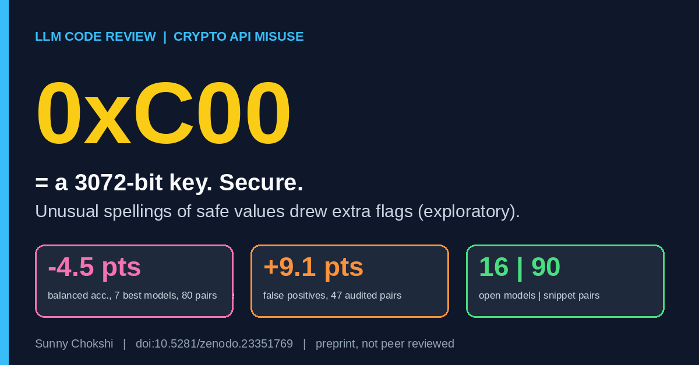

A hex literal made LLM code reviewers raise false alarms
Sunny Chokshi. October 28, 2026.

I wanted to know whether an LLM code reviewer follows what the code does or what the code looks like. Cryptographic API misuse is a clean place to ask, because the same insecure choice can be written in many ways.
The setup: 90 pairs of Python snippets across nine misuse classes. Each pair holds a vulnerable snippet and a secure twin. For 80 pairs I wrote a plain form, with the misuse at the call site under its familiar name, and an indirect form that reaches the same choice through an alias, constant, default, or configuration value. I ran 16 open models.
The secure twins already showed a problem. Two models flag nearly every snippet, and four more flag over 70% of secure code. A reviewer that flags nearly everything tells me little about the code.
Indirection lowered the balanced accuracy of the seven strongest models 4.5 points of balanced accuracy over the 80 pairs (pair-cluster 95% CI 1.3 to 7.6). On the 47 pairs that survive a post hoc stimulus audit, the drop was 5.3 points (CI 2.1 to 8.5).
Where the drop comes from needs care. After the audit it is mainly extra flags on correct code. False positives rose 9.1 points (CI 4.2 to 14.6), mostly in three models. Detection of real misuse fell 3.6 points over all 80 pairs (CI 1.0 to 6.5), but only 1.5 points on the audited pairs, and that interval (CI -1.6 to 4.8) includes zero.
Exploratory splits point at where the false alarms come from. Most of the net false-alarm rise sits in pairs where the safe value has left its usual spelling or place at the call site. A 3072-bit key size written as 0xC00 is the example I keep coming back to. My reading is that the models react to an unfamiliar spelling instead of the value. The paper does not test that directly.
Limits. The snippets are Python and I wrote them. The models are open models. The audit was post hoc and the splits are exploratory. This is a preprint, it is not peer reviewed, and it carries the notice that it has been submitted to the IEEE for possible publication.
Open question for the next study: do the extra flags go away if the reviewer is told to normalize values before judging? I have not tested that.
Read and cite
Preprint on Zenodo (doi:10.5281/zenodo.23351769) · Paper page and PDF
Related work in the same line, an earlier benchmark: CryptoBench (doi:10.5281/zenodo.23067051).
Cite as: Chokshi, S. (2026). Does Indirection Hurt? Paired Evidence on LLM Review of Indirectly Written Cryptographic API Misuse [Preprint]. Zenodo. https://doi.org/10.5281/zenodo.23351769
Dataset: Chokshi, S. (2026). CryptoBench: A benchmark of cryptographic API misuse for evaluating LLM code reviewers [Dataset]. Zenodo. https://doi.org/10.5281/zenodo.23067051
Sunny Chokshi, PhD student, Information Technology, University of the Cumberlands. Research: adversarial robustness of LLMs in cybersecurity. ORCID · GitHub